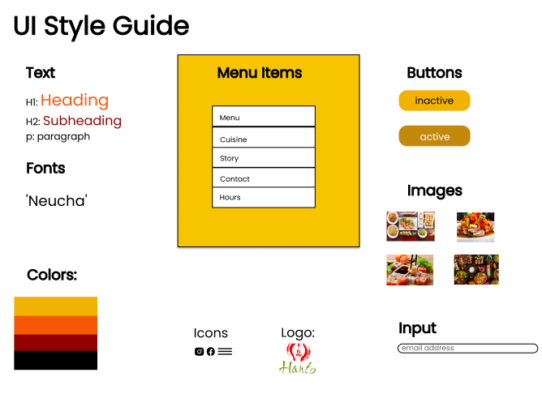

OVERVIEW
For our Responsive Redesign project, we were tasked with identifying and analyzing
an existing
interface and redesigning them to improve the user experience. Below is a screenshot of
the website I chose to
redesign.
Hanto is a small restaurant in Ashland, MA. I chose to redesign this website to
increase its
efficiency,responsiveness and ease of navigation.
PART ONE: IDENTIFYING USABILITY PROBLEMS
Finding Problems:
Usability
- The website is not responsive
- There is unnecessary information on the website
- There is not enough information on the website
Memorability
- All text is written in the same font which means that nothing stands out; this hurts
the
site's memorability aspect, as users will have trouble remembering the aspects of
the
site
they generally interact with.
Accessibility:
WebAIM WAVE TEST
- Very low contrast between text and background colors. Adequate contrast of text is
necessary
for all users, especially users with low vision.
- Text is very small. This might make it hard for people with low vision to read
- Redundant text. “Order online” appears three times on the page.
PART TWO: VISUAL REDESIGN
LOW-FIDELITY WIREFRAMING
VISUAL DESIGN STYLE GUIDE

HIGH-FIDELITY PROTOTYPING
PART THREE: RESPONSIVE REDESIGN
Here is the website I redesigned.